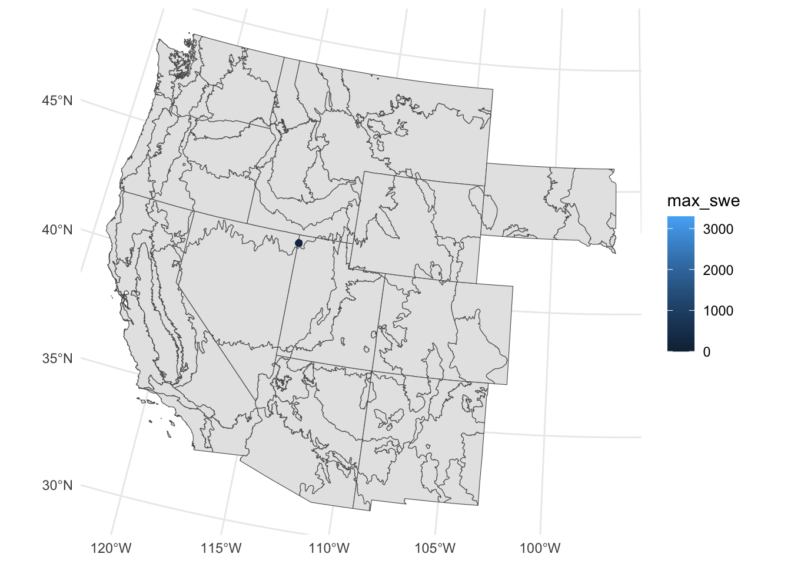
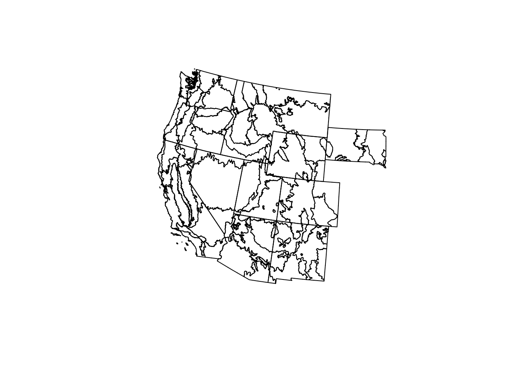
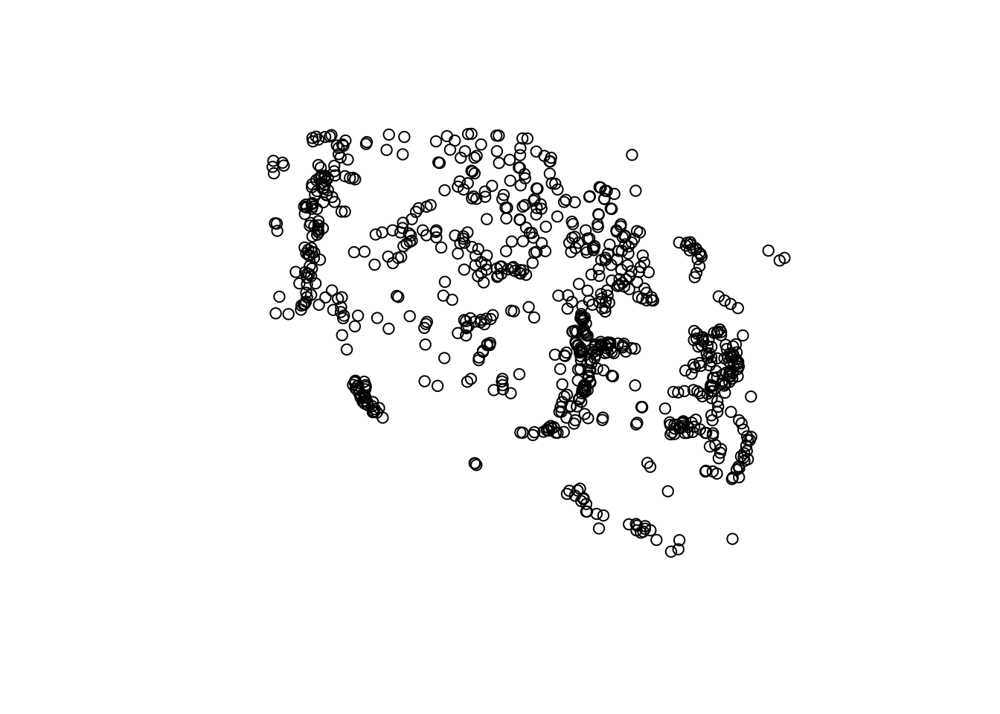

library(pacman)
pacman::p_load(snotelr, sf, terra, tidyterra, tidyverse, here, crsuggest, terrainr)
## test
snoteldata_conus <- read_csv(here("snoteldata_conus.csv"))Rows: 8254751 Columns: 18
── Column specification ────────────────────────────────────────────────────────
Delimiter: ","
chr (5): network, state, site_name, description, county
dbl (10): latitude, longitude, elev, site_id, snow_water_equivalent, precip...
date (3): start, end, date
ℹ Use `spec()` to retrieve the full column specification for this data.
ℹ Specify the column types or set `show_col_types = FALSE` to quiet this message.## snotelinfo
snotelinfo <- snotel_info()
## reading in ecoregions with state boundaries
ecoregions_usb_sf <- read_sf(here("Project","Data", "L3_Ecoregions_USB", "us_eco_l3_state_boundaries.shp")) |>
filter(STATE_NAME == "California" | STATE_NAME == "Oregon" | STATE_NAME == "Colorado" | STATE_NAME == "Idaho" | STATE_NAME == "Wyoming" | STATE_NAME == "New Mexico" | STATE_NAME == "Montana" | STATE_NAME == "Arizona" | STATE_NAME == "South Dakota" | STATE_NAME == "Nevada" | STATE_NAME == "Utah" | STATE_NAME == "Washington")
crs(ecoregions_usb_sf, describe = TRUE) name authority code
1 USA_Contiguous_Albers_Equal_Area_Conic_USGS_version ESRI 102039
area
1 United States (USA) - CONUS onshore - Alabama; Arizona; Arkansas; California; Colorado; Connecticut; Delaware; Florida; Georgia; Idaho; Illinois; Indiana; Iowa; Kansas; Kentucky; Louisiana; Maine; Maryland; Massachusetts; Michigan; Minnesota; Mississippi; Missouri; Montana; Nebraska; Nevada; New Hampshire; New Jersey; New Mexico; New York; North Carolina; North Dakota; Ohio; Oklahoma; Oregon; Pennsylvania; Rhode Island; South Carolina; South Dakota; Tennessee; Texas; Utah; Vermont; Virginia; Washington; West Virginia; Wisconsin; Wyoming
extent
1 -124.79, -66.91, 49.38, 24.41crsuggest::suggest_crs(ecoregions_usb_sf)# A tibble: 10 × 6
crs_code crs_name crs_type crs_gcs crs_units crs_proj4
<chr> <chr> <chr> <dbl> <chr> <chr>
1 6341 NAD83(2011) / UTM zone 12N project… 6318 m +proj=ut…
2 4432 NAD83 / BLM 12N (ftUS) project… 4269 us-ft +proj=tm…
3 4412 NAD27 / BLM 12N (ftUS) project… 4267 us-ft +proj=tm…
4 3742 NAD83(HARN) / UTM zone 12N project… 4152 m +proj=ut…
5 3719 NAD83(NSRS2007) / UTM zone 12N project… 4759 m +proj=ut…
6 6626 NAD83(2011) / Utah North (ftUS) project… 6318 us-ft +proj=lc…
7 6620 NAD83(2011) / Utah North project… 6318 m +proj=lc…
8 3680 NAD83(NSRS2007) / Utah North (… project… 4759 us-ft +proj=lc…
9 3679 NAD83(NSRS2007) / Utah North (… project… 4759 ft +proj=lc…
10 3678 NAD83(NSRS2007) / Utah North project… 4759 m +proj=lc…##### grouping data by snotel site, plotting max SWE #####
snoteldata_conus_grp <- snoteldata_conus |>
dplyr::group_by(site_id) |>
summarise(max_swe = max(snow_water_equivalent))
snotelinfo_conus_grp <- snotelinfo |>
filter(site_id %in% snoteldata_conus_grp$site_id)
snoteldata_conus_grp <- merge(snoteldata_conus_grp, snotelinfo_conus_grp, by = "site_id") |>
select(site_id, site_name, max_swe, longitude, latitude)
## converting df of max swe to sf object
snoteldata_conus_grp_sf <- st_as_sf(snoteldata_conus_grp, coords = c("longitude", "latitude"))
## using median longitude and latitude to find appropriate crs
crsuggest::guess_crs(snoteldata_conus_grp_sf, target_location = c(-111.93, 42.14))Evaluating CRS options...
The 'best guess' for the CRS of your data is EPSG code 26768.
Use `sf::st_crs(your_data) <- 26768` to use this CRS for your data.
View the returned dataset for other possible options.# A tibble: 10 × 2
crs_code dist_km
<chr> <dbl>
1 26768 180.
2 6451 226.
3 3525 226.
4 2241 226.
5 2886 226.
6 6450 226.
7 3524 226.
8 26968 226.
9 2787 226.
10 5069 2587.## setting CRS with best guess
st_crs(snoteldata_conus_grp_sf) <- 26768
## transforming ecoregions to use same crs
st_transform(ecoregions_usb_sf, 26768)Simple feature collection with 277 features and 13 fields
Geometry type: POLYGON
Dimension: XY
Bounding box: xmin: -2911610 ymin: -3760536 xmax: 4745145 ymax: 2864111
Projected CRS: NAD27 / Idaho East
# A tibble: 277 × 14
US_L3CODE US_L3NAME NA_L3CODE NA_L3NAME NA_L2CODE NA_L2NAME NA_L1CODE
* <chr> <chr> <chr> <chr> <chr> <chr> <chr>
1 1 Coast Range 7.1.8 Coast Range 7.1 MARINE WEST … 7
2 1 Coast Range 7.1.8 Coast Range 7.1 MARINE WEST … 7
3 1 Coast Range 7.1.8 Coast Range 7.1 MARINE WEST … 7
4 1 Coast Range 7.1.8 Coast Range 7.1 MARINE WEST … 7
5 1 Coast Range 7.1.8 Coast Range 7.1 MARINE WEST … 7
6 1 Coast Range 7.1.8 Coast Range 7.1 MARINE WEST … 7
7 1 Coast Range 7.1.8 Coast Range 7.1 MARINE WEST … 7
8 1 Coast Range 7.1.8 Coast Range 7.1 MARINE WEST … 7
9 1 Coast Range 7.1.8 Coast Range 7.1 MARINE WEST … 7
10 1 Coast Range 7.1.8 Coast Range 7.1 MARINE WEST … 7
# ℹ 267 more rows
# ℹ 7 more variables: NA_L1NAME <chr>, STATE_NAME <chr>, EPA_REGION <int>,
# L3_KEY <chr>, L2_KEY <chr>, L1_KEY <chr>,
# geometry <POLYGON [US_survey_foot]>crs(snoteldata_conus_grp_sf, describe = TRUE) name authority code
1 NAD27 / Idaho East EPSG 26768
area
1 United States (USA) - Idaho - counties of Bannock; Bear Lake; Bingham; Bonneville; Caribou; Clark; Franklin; Fremont; Jefferson; Madison; Oneida; Power; Teton
extent
1 -113.24, -111.04, 44.75, 41.99## creating plot of max_swe
max_swe_plot <- ggplot() +
theme_minimal() +
geom_sf(data = ecoregions_usb_sf) +
geom_sf(data = snoteldata_conus_grp_sf, mapping = aes(color = max_swe))
max_swe_plot
ggsave("maxsweplot.png")Saving 7 x 5 in imageplot(st_geometry(ecoregions_usb_sf))
plot(st_geometry(snoteldata_conus_grp_sf, add = TRUE))